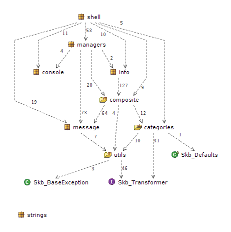

Implementation of basic concepts, some small some bigger but all build for reuse in many contexts.
The project is organized in packages representing those implementations.
Some concepts require more than one package.
Packages can but don't have to be related to each other.
For instance, the message package is used by the composite.coin package which in turn is used by the managers package.
The figure below shows the composition of the overall project.

Very basic interfaces are provided in the top level base package.
The package categories defines a hierarchy of interfaces (and some classes and default implementations) for categories such as 'has' something or 'is' something.
It has two sub packages: categories.kvt for key/value/type categories (e.g. keys and keys with types) and categories.options for option categories (still experimental).
The package composite provides a simple implementation of the composite pattern with a top element and nodes (containing other nodes and leafs) and of course leafs.
It has one sub package composite.coin that defines hybrid classes implementing node and leaf functionality (so "both sides of a coin").
Those hybrid objects can be used as node and leaf. The package defines null objects, which can be used to qualify a null return (as compared to simply returning null).
The package also defined CC objects for standard message types: information, warning, and error.
The console package has an implementation of a non-blocking console reader and an object with some interesting console features.
Skb_Console defines loggers that can then be used for standard console output (similar to stdout and stderr, just using loggers thus configurable at runtime).
It also provides standard methods to use the loggers. For example conWarn() will print a message typed warning to the standard out logger.
These methods make use of a global variable USE_CONSOLE, thus they can be switched on and off by an application resulting in standard output being printed or ignored at runtime.
The info package implements a concept for defining, retrieving, writing, and validation information sources and information.
This package solves many standard problem: define and validate a directory or a file or a set of both, load STGroups from any source and validate them, walk directries and apply actions to filtered elements found.
The concept here is based on
InfoSource as a source of information (directory, file, database with constraints such as file system, resource)InfoLoader as something that can load information from a given InfoSource (for instance a set of files from a directory)InfoTarget as a target of information (the opposite of an InfoSource)InfoWriter as a writer of information to an InfoTarget (kind of the opposite of an InfoLoader)InfoValidator as a validator of source or target or actual informationEach of these concepts has some implementations for standard problems.
The managers package implements managers, currently only a message manager that uses the standard message and coin objects and provides an object with flexible message processing (printing, storing, counting).
The message package implements the concept of a message as a 5WH object: who, what, when, where, why, and how. It comes with builder and renderer (using string templates).
The shell package implements a shell with commands being injected into as command interpreters.
Commands can have arguments (parameters).
All of those shell components are defined in interfaces and the package provides abstract implementations and a factory. Some standard commands (exit, wait, standard help generation using string templates or ASCII tables, history, and run commands) are implemented.
The strings package implements strings that have an identifier and a version and/or a value part.
This can be very helpful when identifier need to be encoded along with versions but defining a class is for some reasons not suitable.
The utils package provides some standard utils. The sub package utils.collections has some simple helper classes to deal with Java maps and Java collections.